← 返回阅读库 · 原论文目录
论文讲解阅读文档 · 新模型 · v070
NeRV Neural Representations for Videos[2110.13903]
视频时长 00:08:33；讲解文字 3,574 字符；提取讲解画面 26 张。按视频原顺序阅读，每段文字保留时间戳。
文字来自整段视频的自动语音转写，按自然停顿分段，并与 PPT / 论文页面 / 演示画面对齐。未将讲解压缩为摘要；术语、数字和口述公式请结合画面及原论文核对。 阅读稿已校正规范部分明确术语误识别；原始逐字稿和每处修改记录另行保留。
讲解画面为源视频截图（640×360），不是可编辑 PPT 文件。全片按每秒 2 帧扫描内容变化，逐步展开页保留；连续动画保留代表画面。清晰度受源视频限制。
下载完整资料包 · 含离线 HTML、PDF、Word、全部 PPT 画面和字幕。
原论文与材料
NeRV: Neural Representations for Videos · 下载完整 PDF（15 页）
按时间阅读
00:00:00–00:00:25 · 画面 001
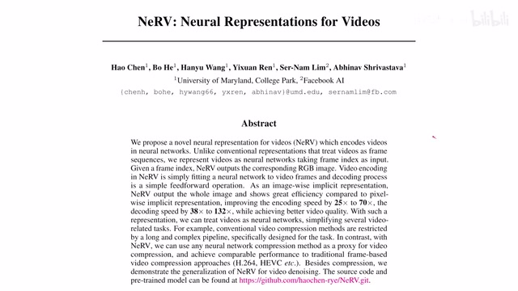
00:00:00–00:00:25 · 画面 001大家好,今天我们来快速说一篇论文 NeRV, Neural Representations for Videos 同时有另一篇论文也叫 NeRF 它是做 Neural Rendering 的在这里我们首先要明确它们的区别像这一篇就是专注来做视频的压缩的然后同时作者还发现这个 Neural Representation 对于降噪还有一定的作用那么我们继续来看作者的实现
00:00:25–00:01:11 · 画面 002
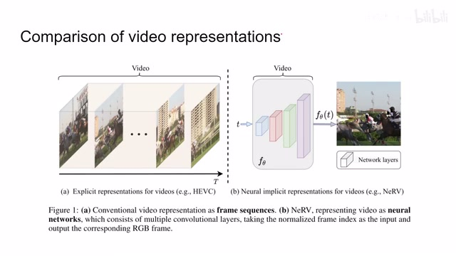
00:00:25–00:01:11 · 画面 002首先呢作者先提及了一些 video representation 的比较像传统的这个 HEVC、H.264 这种啊就是 k 帧加上 motion 这样的一个形式那么本文的方法呢哎你可以看到这个结构图其实说的很明白了它呢相当于把我们一个网络当成一个存储的介质每次呢我们用这个 t 就是这个视频中的这个相对时间去查询这个网络所谓查询呢其实就是把这个 t 作为网络的输入输进来嘛然后这个网络的输出呢，就是相应的这个视频的这一帧，所以你知道为什么我们会选这一篇文章，是因为你如果把这个网络结构反过来，它正好是一个这个 image-based reinforcement learning，对吧？作为图像作为输入，输出一个 qvalue，那么下面呢，我们就来看看作者是具体怎么样实现的。首先这个 architecture 啊，这里呢，作者对比了两种，一种之前这个 siren，它是这个 pixelwise，那一种呢，就是本文的这个 imagewise 的。
00:01:11–00:02:50 · 画面 003
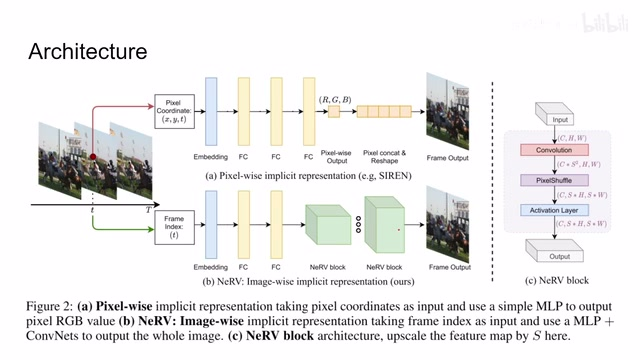
00:01:11–00:02:50 · 画面 003所谓 pixelwise 呢，它也是相当于把我们的 neural network 当成一个大的数据库，每次呢我们去查它实际的 RGB 值是多少，但是在这个 pixelwise 的这个数据库里面呢，它所接受的这个是 XYT，也就是说它每次呢需要这个点的 XYZ 坐标还有它的时间轴上的坐标，同时呢它查出来呢就是一个点，那你为了查这一整张图呢，你就需要把很多很多的点对吧，都查一遍都查出来这个结果来，然后呢给它拼成一整张图。
那在本文的方法中呢，相当于我只要查这一个时间戳对吧，我把这个 t 扔进来，然后呢它又会给我们直接输出一整张图，所以看到这个效率上呢是明显的提升的。那像这里我们的前面它这个 t 过一个 embeddingembedding 马上我们会介绍，然后呢全连接层，然后呢送到这个 NeRV 的这个 block 里面，最终呢输出一个图像，那么这个 NeRV 的 block 呢，我们看到这里非常简单。
假如说我们的输入是一个 CxHxW 的这么一个 tensor，过一个卷积层，这个卷积呢，它帮助我们把这个 Cchannel 变成了 CxS2 的这么一个 channel 数量，那我们为什么要乘上这个 S2 呢？因为马上我们就用到这个 pixel shuffle，相当于呢把这样一个 tensor 里面的这个多出来的这些这个通道的数量给它匀到我们的这个长和宽里面，最后呢再过这个激活函数得到这个 block 的输出，那么这个 pixel shuffle 是怎么匀的呢？其实呢这并不是本文提出的一个新鲜的技术，我们来看到这篇工作，这是之前做一个 super resolution 的这么一个文章，可以看到呢这里我们的这个 convolution 做完它多出了很多个 channel。
00:02:50–00:03:43 · 画面 004
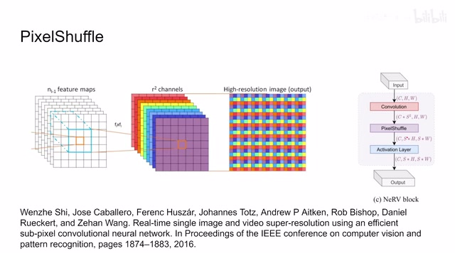
00:02:50–00:03:43 · 画面 004然后呢我们把它这个每一个 channel 同样的一个像素的位置按照这样的一个格式去给它排列比如说这里有 9 个 channel 你看了它会把对应位置的一个像素它因为它的 channel 的厚度是 9 嘛所以呢这里有 9 个值把它平摊成这么一个 3x3 的这一个小方块这样就实现了这个 super resolution 那这是一个非常巧妙的设计因为你这一个位置上的像素呢这一串 9 个像素呢都是在同一个位置上的 computation 做出来的所以说呢它们之间呢是存在位置上的相关性的也就是说它们放在一起呢是非常合理的那么这个呢就是这里的这个 pixel shuffle 那么现在我们介绍完的模型就可以看到本文的具体的输入输出了首先输入啊我们拿到这个时间轴 t 它呢被 normalize 到 0 到 1 嘛然后呢我们把它做到这个 embedding 送到我们的 fully connected layers
00:03:43–00:03:44 · 画面 005
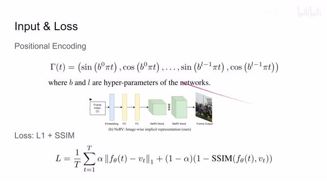
00:03:43–00:03:44 · 画面 00500:03:44–00:04:22 · 画面 006
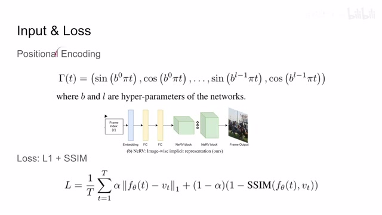
00:03:44–00:04:22 · 画面 006你看到其实它的本质上就是一个 positional encoding，或者你甚至叫它傅里叶系数，我觉得都问题不大，你看到前面的这些项 T 的变化并不会非常明显的影响到这个项的变化，但是随着这个位置的增加，你可以看到我们的 b 它其实相当于角速度，它数量越来越大。其实越要到后面，越到后面我们这几位它的变化频率就越来越高，它就编码了从低频到高频的这么一个信号的变化，同时 position encoding 它还会带来一个隐藏的好处，假如说你没有 position encoding，你输入一个值进来之后，你不能保证说每一个 fully connected node 它学到的东西都是不一样的。
00:04:22–00:04:23 · 画面 007
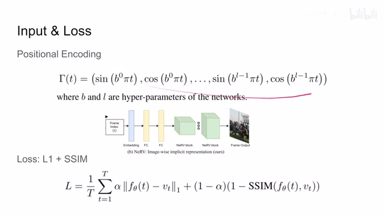
00:04:22–00:04:23 · 画面 00700:04:23–00:05:39 · 画面 008
00:04:23–00:05:39 · 画面 008同时呢你需要把整个这个 t 范围内的所有可能的值呢都给它过一遍这样子呢才能保证我们整个的网络从 t 等于 0 到 t 等于 1 这一个连续的范围内它都接受过训练而你在使用这个 position encoding 之后呢首先 embedding 出来你每一个位置上的值它是各不一样的同时呢它们以不同的频率从这个-1 到 1 之间来变化比如说你取其中的某一段像后面这些比较高频的信号它已经从-1 变到 1 就经历过很多次了这样相当于给我们的样本的多样性提供一个保证让我们的网络学习的更快那么这个是 Positional Encoding 隐含的一些好处相同的设计在 NERF 里面就是 NERF 做 neural rendering 包括它后续的工作里面都有出现是一个标准的配置
那至于损失这块就非常简单了就是一个 L1 loss 加上这个 structural similarity 你看到假如说一个视频里面有 T 帧做了一个平均每一帧呢他们的 L1 loss 还有这个 similarity loss 都是非常直接的这个 loss 就写在这里那么经过这样一个流程之后呢我们呢就可以把我们整个这个模型给它 train 出来了这个模型呢就存储了这一个视频里面所有的信息你每次想取哪一帧呢你把这个时间扔进去就好了但是到这里呢我们的工作还没有结束
00:05:39–00:05:40 · 画面 009
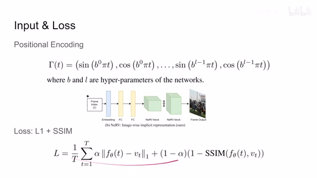
00:05:39–00:05:40 · 画面 00900:05:40–00:06:02 · 画面 010
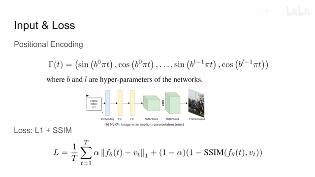
00:05:40–00:06:02 · 画面 010你想保存一个模型它也不小因此我们还需要对这个模型再进一步的进行压缩这里就到本文第二阶段就是对于模型的压缩的环节当然这些操作都是非常标准的操作我们这个 videotrain 完了之后我们先做一个 pruning 这里其实就是把我们的所有的参数按照它的大小排个序
00:06:02–00:06:34 · 画面 011
00:06:02–00:06:34 · 画面 011然后保留前百分之 q 的这又意味着如果你们这两个连接它们的权重不大我们就直接把连接的权重设置为 0 了这样子就节省了一大批的存储空间那么做完这个事之后又做了一个 fine-tuning 那么得到这里模型已经精简了一步了为了进一步精简这里就需要 quantization 相当于减少每一个权重它使用的比特位的数量就是用更小的比特位去表示一个数
00:06:34–00:06:35 · 画面 012
00:06:34–00:06:35 · 画面 01200:06:35–00:06:38 · 画面 013
00:06:35–00:06:38 · 画面 01300:06:38–00:07:12 · 画面 014
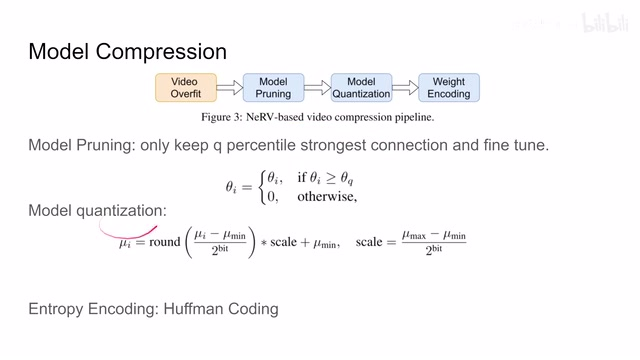
00:06:38–00:07:12 · 画面 014当然这个过程并不是直接的说你把后面几位咔掉就可以了不是的这里作者使用了类似于 PCM 的方法就是我维护一个权重的最小值然后把每个权重和最小值的差划分成不同的 scale 最后用数量很少的 bit 把 scale 给它表示出来如果你想更多的了解可以去找一本信号处理的教材得到量化之后模型进一步压缩了最后作者还使用 entropy encoding 其实就是经典的 Huffman 就是出现频率越高的字符它使用的编码空间就越少好的那么以上就是本文主要的技术要点了那么它的核心还是使用一个 timestamp 一次去查询一整帧出来那么来看到作者汇报的一些结果一些漂亮的数字对比了 siren 和 nrf 训练速度也提高了编码时间也减少了
00:07:12–00:07:21 · 画面 015
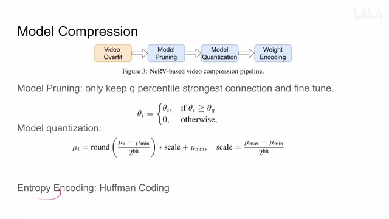
00:07:12–00:07:21 · 画面 01500:07:21–00:07:24 · 画面 016
00:07:21–00:07:24 · 画面 01600:07:24–00:07:29 · 画面 017
00:07:24–00:07:29 · 画面 01700:07:29–00:07:30 · 画面 018
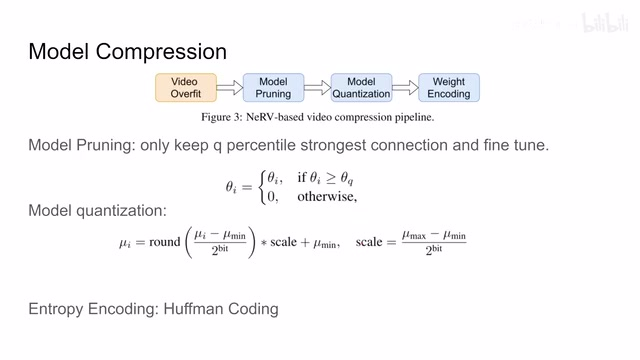
00:07:29–00:07:30 · 画面 01800:07:30–00:07:50 · 画面 019
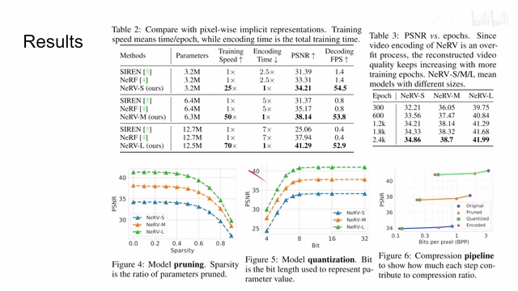
00:07:30–00:07:50 · 画面 019这个图像的质量也变好了对吧然后呢解码的速度呢快得非常多因为它毕竟一次就 dump 出一整张图像来比一个像素一个像素的长那是快非常多了这边呢还有更多的这个 ablation 那此外呢作者还尝试这个 denoising 降噪的一个处理几种常见噪声对吧然后但是它对比都是一些传统的迹象的视觉这种滤波的方法啊也不是说特别强的方法
00:07:50–00:07:51 · 画面 020
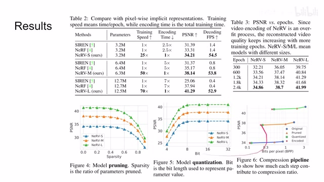
00:07:50–00:07:51 · 画面 02000:07:51–00:07:57 · 画面 021
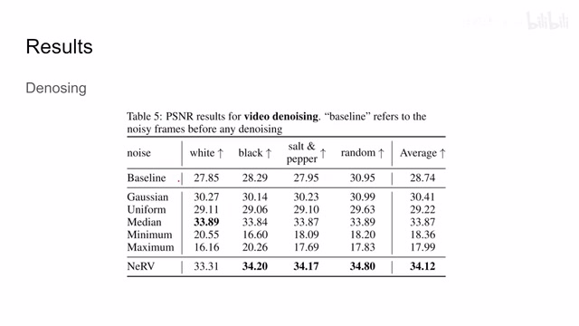
00:07:51–00:07:57 · 画面 02100:07:57–00:07:58 · 画面 022
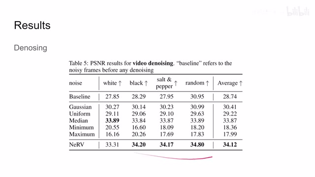
00:07:57–00:07:58 · 画面 02200:07:58–00:08:04 · 画面 023
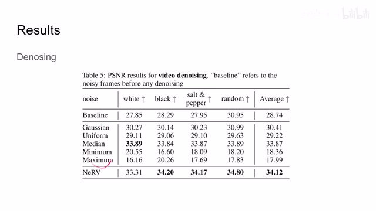
00:07:58–00:08:04 · 画面 023可以当个添头不过我非常好奇既然它是用一个连续的时间去编码整个视频它有没有做过尝试做过插帧这些东西的实验这个方向往下做其实也是一个挺有意思的事情那么最后是更多的 ablation 比如说这里 Positional encoding 对于效果的提升是非常明显的还有更多的这些实验的细节感兴趣的朋友欢迎到原文查看好的以上就是我对这篇论文的一个简单的分析
00:08:04–00:08:16 · 画面 024
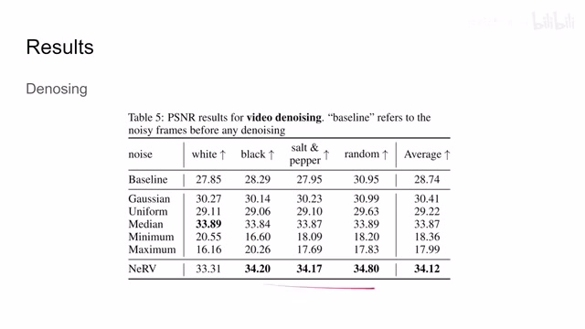
00:08:04–00:08:16 · 画面 02400:08:16–00:08:23 · 画面 025
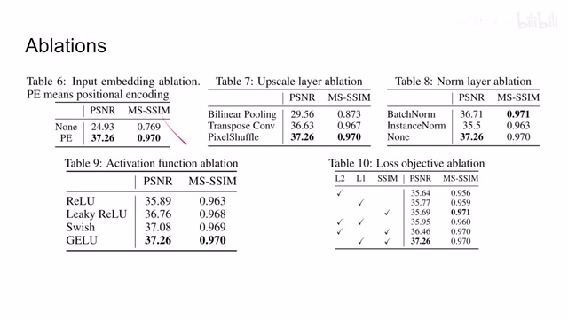
00:08:16–00:08:23 · 画面 02500:08:23–00:08:33 · 画面 026
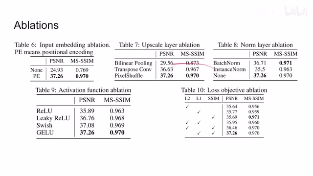
00:08:23–00:08:33 · 画面 026那么感谢您的收看再见
转写与来源说明 · 0 个自动复核提示
保留 21 个原始语音片段，0 个片段触发自动复核提示。提示仅用于定位可能的术语、重复或识别问题，不等于已确认错误。
讲解画面为源视频截图（640×360），不是可编辑 PPT 文件。全片按每秒 2 帧扫描内容变化，逐步展开页保留；连续动画保留代表画面。清晰度受源视频限制。
原视频：paper/合集_2026-10-16_新模型/[论文简析]NeRV Neural Representations for Videos[2110.13903].mp4
SHA-256：20206288e0f1cce3ae8339a8626020b98f0d94c3174b6b505f66efc92916af83
全文按视频语音与画面制作。原论文可从上方链接下载；完整资料包保留全文、原始逐字稿、字幕和校对记录。